Last Updated: 2021-06-24
概要
このガイドでは、「カスタムの実行」操作を使ってカスタムアサーションを実行するための MUnit の機能の概要を説明します。
何を構築するのか
カスタムアサーションを持つ新しいJavaクラスを作成し、カスタムアサーションを使用してMuleフローをテストするテストスイートを作成します。
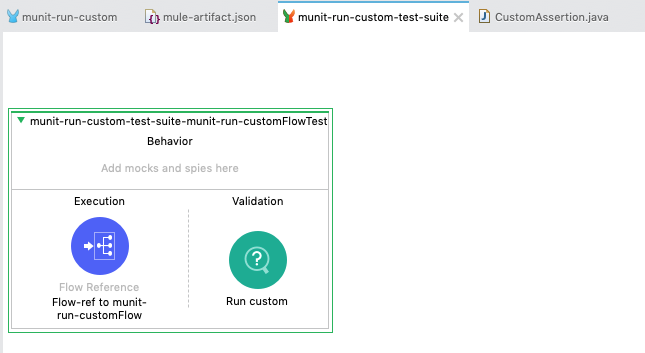
学習内容
- Java でカスタムアサーションモジュールを作成する方法
- MUnit テストスイートでカスタムアサーションを実行する方法
必要条件
- Anypoint Studio 7.5.0 or later
- MUnit 2.2.5 or later
- MUnit Anypoint Studio Plugin 2.5.0 or later
- Mule Runtime Engine 4.3.0 or later
Anypoint Studioの起動
まだAnypoint Studioを開いていない場合は、Anypoint Studioを開きます。ワークスペースは何でも構いません。
Mule プロジェクトの新規作成
FileメニューからNew > Mule Projectを選択します。
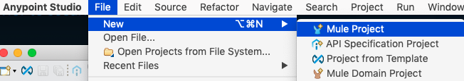
New Mule Projectウィンドウで、プロジェクトに名前を付け（例：munit-run-custom）、Runtimeを選択し（例：Mule Server 4.3.0 EE）、Finishをクリックします。
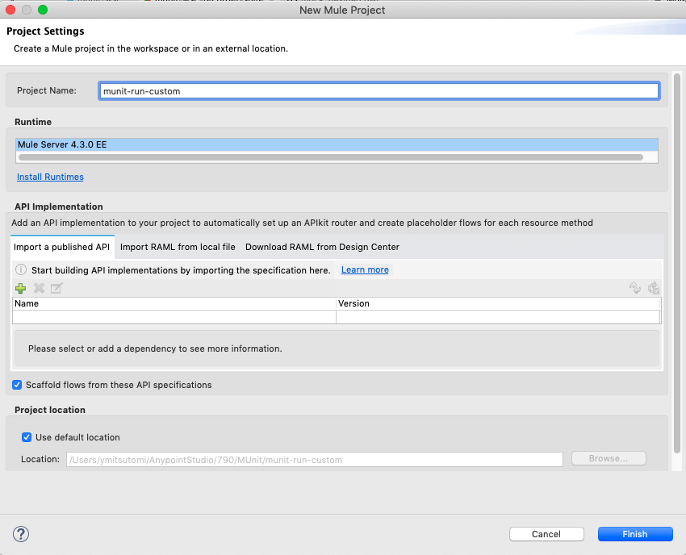
HTTP listenerの設定
新しいプロジェクトが作成されると、真っ白なキャンバスが表示されます。
右側のMule Paletteから、HTTP > Listenerコンポーネントをキャンバスにドラッグ＆ドロップします。
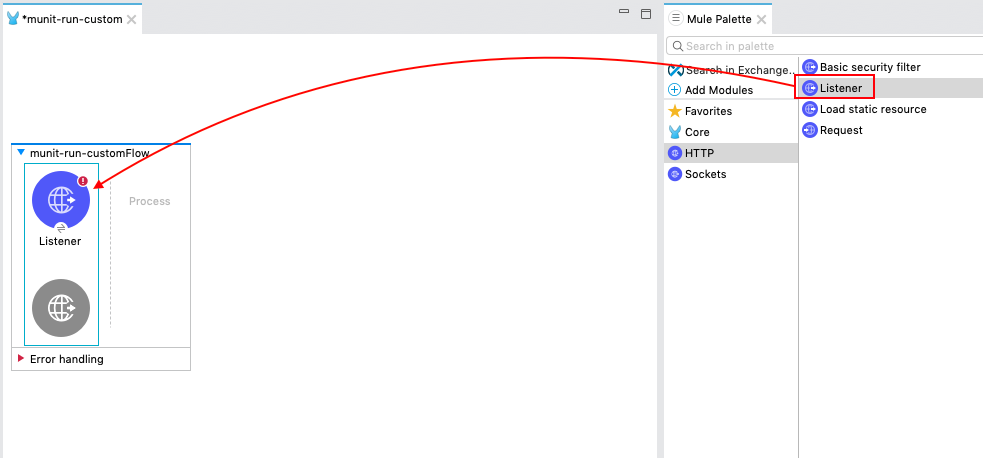
ListenerのMule Propertiesで、緑のプラス記号をクリックして、Connector configurationを作成します。
GeneralタブのConnectionセクションでは、デフォルトの選択のままOKをクリックします。
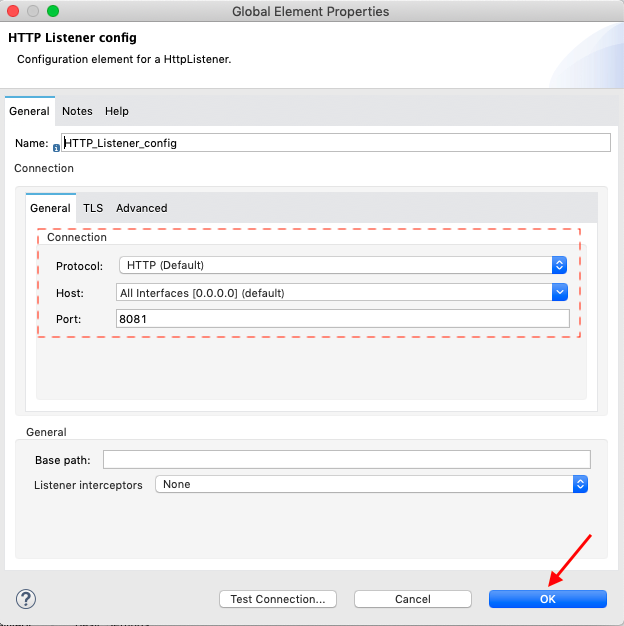
Muleのプロパティタブに戻り、Listenerの Pathフィールドに以下のように記入します。
/custom

Transform Message コンポーネントの設定
右側のMule Paletteから、Core > Transform Messageコンポーネントを、前のステップで作成したフローにドラッグ＆ドロップします。
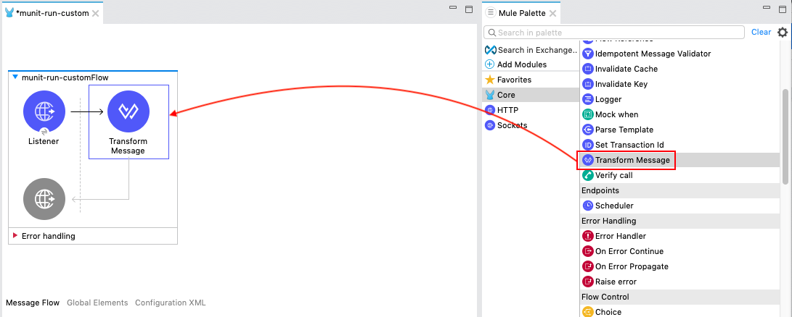
Transform Messageコンポーネントをクリックし、以下のDataWeave Scriptをコピー＆ペーストします。
%dw 2.0
output application/json
---
['111','222','333']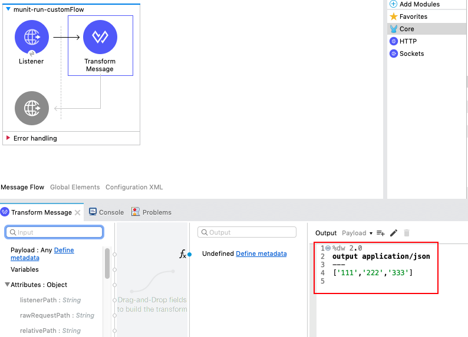
Logger コンポーネントの設定
右側のMule Paletteから、Core > Loggerコンポーネントを、前のステップで作成したフローにドラッグ＆ドロップします。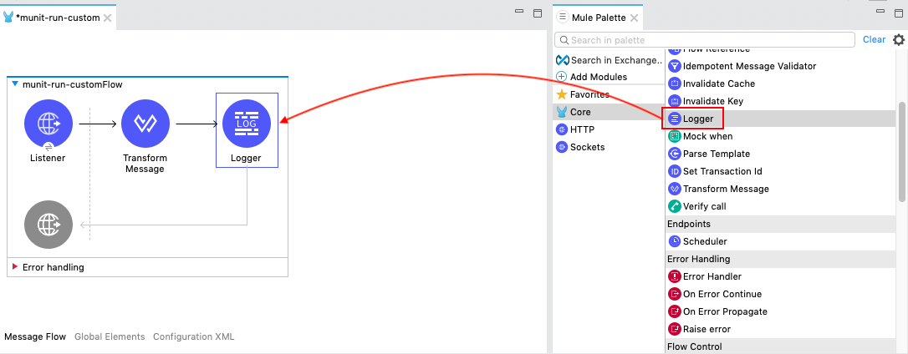
Messageフィールドのfxボタンをクリックして、Expression Modeにします。
Messageフィールドを以下のように設定します。
payload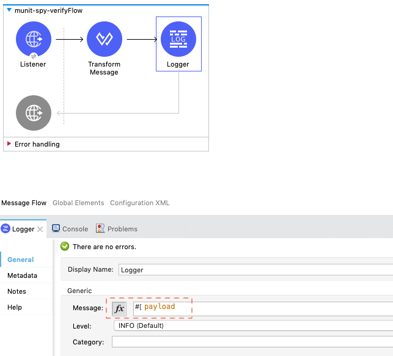
Mule アプリケーションの起動
次のステップは、構築したフローをテストすることです。キャンバス上で右クリックし、Run project munit-run-customを選択します。
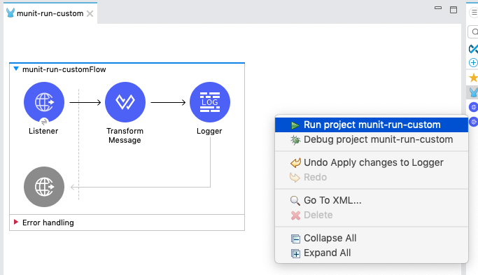
Consoleが表示されるはずです。ステータスがDEPLOYEDと表示されるのを待って、次のステップに進みます。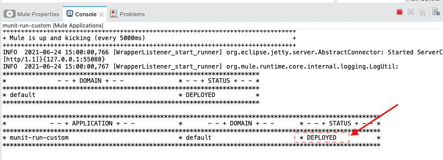
Muleアプリケーションのテスト実行
ブラウザを開き、URLバーにhttp://localhost:8081/customと入力します。
すべてが正しく設定されていれば、下のような画面が表示されます。

停止アイコンをクリックして、アプリケーションを停止します。
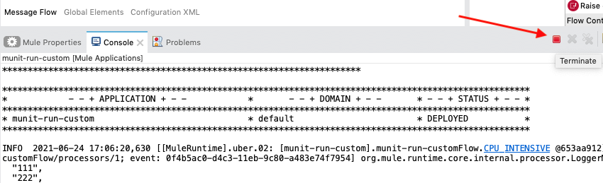
空のMUnitテストケースの生成
スタジオに戻って、Munit テストスイートを作成しましょう。
フローを選択して右クリックします。MUnit > Create blank test for this flow を選択します。
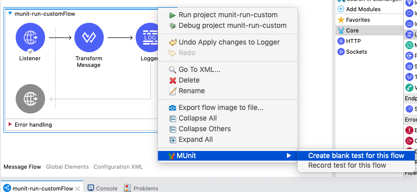
空白の MUnit Test Scope が作成されます。実行時には、MuleアプリケーションのフローへのFlow Referenceが表示されます。
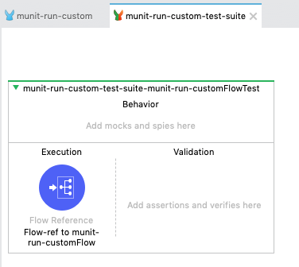
MUnit Assertのmaven依存関係をプロジェクトに追加
次に、Java クラスを使用してカスタムアサーションを作成します。
プロジェクトのPackage Explorerで、pom.xmlを見つけて開きます。
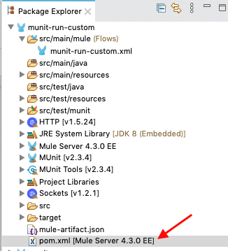
dependenciesタグ内に以下のエントリを追加します。
<dependency>
<groupId>com.mulesoft.munit</groupId>
<artifactId>munit-assert</artifactId>
<version>2.3.4</version>
<scope>test</scope>
</dependency>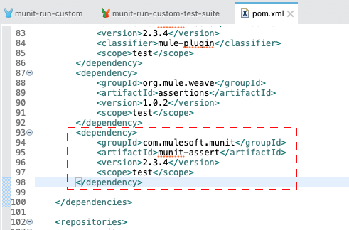
カスタムアサーションの作成
プロジェクトのPackage Explorer で、src/test/javaフォルダを探します。
そのフォルダを右クリックし、New > Classを選択します。
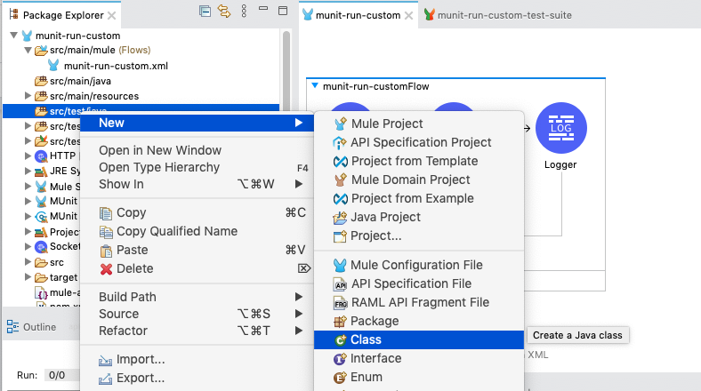
New Java Classウィンドウで、Package: フィールドに以下を入力します。
com.mulesoft
Nameフィールドには
CustomAssertion
を入力し、Interfaces: フィールドのAdd...をクリックします。
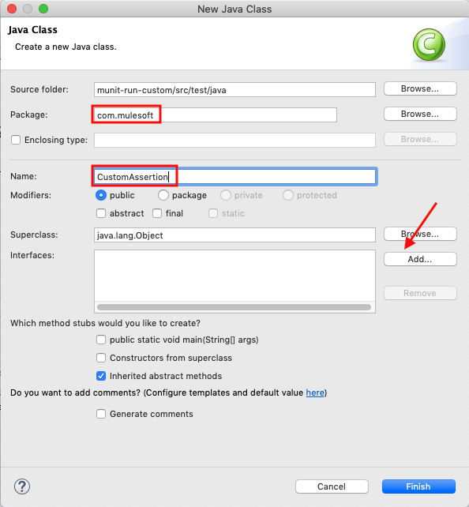
表示されたウィンドウで、次のように入力します。
MunitAssertion
をChoose interfaces: に入力し、最初に一致した項目を選択します。
OKをクリックします。
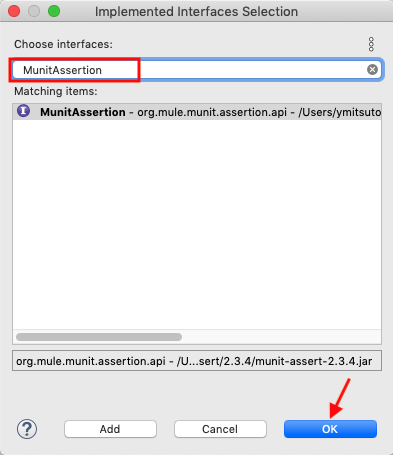
Finish をクリックしてウィンドウを閉じます。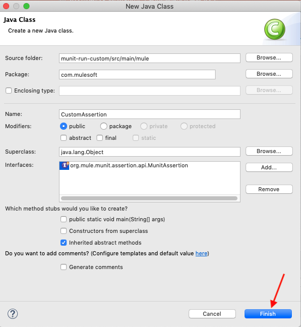
自動的に生成されたメソッド・スタブを持つ、新しく作成されたJavaクラスが表示されます。
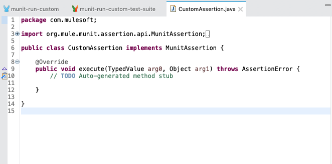
以下のコードをコピーしてexecuteメソッドに貼り付けます。
if (!"\"111\"".equals(arg0.getValue() + "")) {
throw new AssertionError("Error: the payload is incorrect");
}このコードは、カスタムアサーションに渡されたペイロードの値をチェックします。
その値が等しくない場合は、アサーションエラーを投げます。
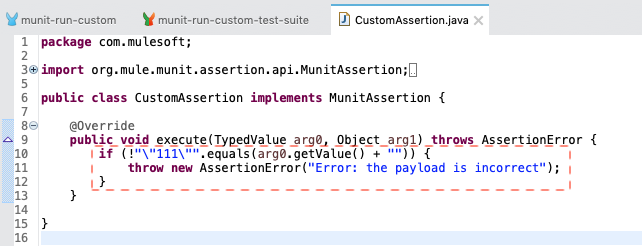
カスタムアサーションモジュールのエクスポート
MUnit モジュールが使用するアプリケーションのクラスにアクセスするためには、そのクラスをエクスポートする必要があります。そのためには、mule-artifact.json ファイルを修正する必要があります。
プロジェクトフォルダの中にmule-artifact.jsonファイルがありますので、ファイルをダブルクリックして開き、編集できるようにします。
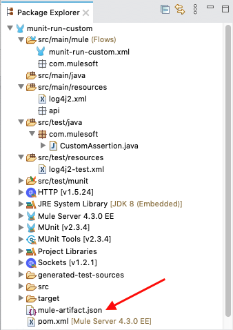
初期ファイルは以下のようになっています。
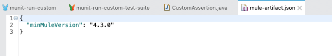
以下のコードをコピーして、ファイルに貼り付けてください。
{
"minMuleVersion": "4.3.0",
"classLoaderModelLoaderDescriptor": {
"id": "mule",
"attributes": {
"exportedPackages": [
"com.mulesoft"
]
}
}
}exportedPackagesフィールドに、先ほど作成したパッケージが含まれていることに注目してください。
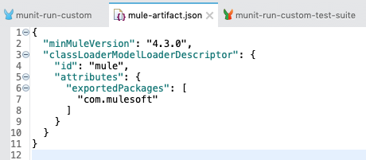
テストスコープの構築
テストスコープの構築を終えましょう。Mule パレットから、MUnit Tools > Run のcustom operationをスコープの Validation 側にドラッグ＆ドロップします。
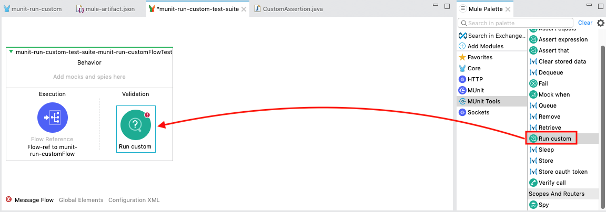
Mule Propertiesウィンドウで、以下のフィールドに対応するデータを入力します。
Assertion:
com.mulesoft.CustomAssertion
Expression:
#[payload[0]]
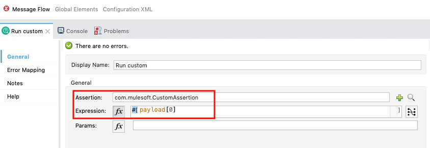
次のセクションでは、MUnit スイートを実行して、テストの結果を確認します。スタジオ・コンソールには、フローの出力が表示されます。さらに、MUnit 用のビューがあり、結果、エラー、メッセージ、カバレッジ・レポートが表示されます。
テストスイートの実行
テストのセットアップが完了したので、テスト・スイートを実行して、合格するかどうかを確認してみましょう。
フローを右クリックし、Run MUnit suiteを選択します。
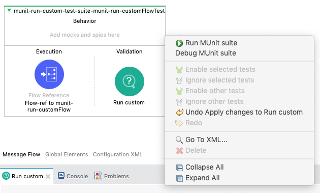
すべてが正しく設定されていれば、Consoleにテストが成功したことが表示されます。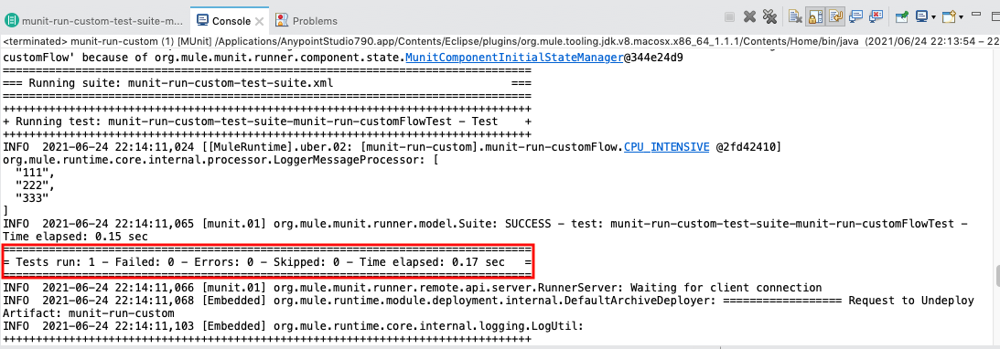
さらに、MUnitタブには、エラーや失敗がゼロで実行が成功したことが表示されます。
MUnit CoverageタブでGenerate Reportをクリックします。
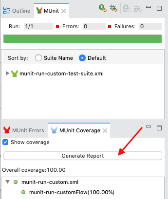
MUnit Coverage Report が生成され、テストの全体的なカバレッジの概要が表示されます。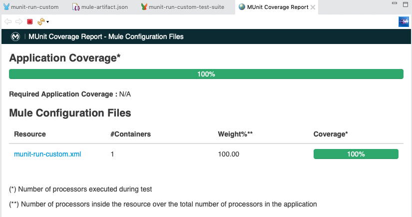
最後に、Muleのフローに戻ると、各プロセッサの横に緑色のチェックマークが表示され、MUnitテストがカバーしていた内容を示しています。
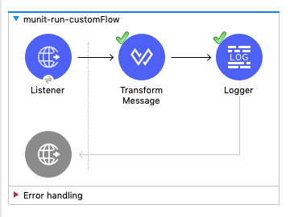
これで、カスタムアサーションを作成し、それを MUnit テストケースで活用することができました。
次は?
Check out some of these codelabs...
- TBD